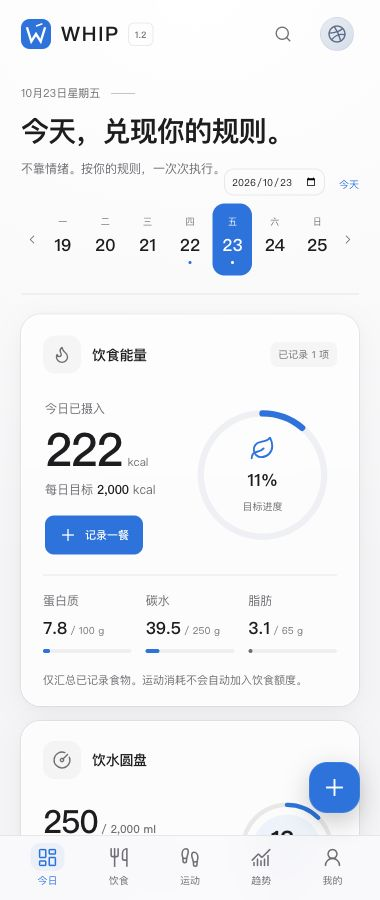

01 / FINANCIAL EXPERIENCE交互原理演示 · 合成数据 · 保留原型账户配色
WEALTH PRO
资产配置概览
合计市值¥ 50,000
账户构成 · 点击查看明细
01 / WEALTH PRO
极简财富 Pro个人资产管理原型
把多账户资产、配置占比与盈亏拆成不同阅读层级。深度案例从信息架构出发，解释 Canvas 圆环的绘制、命中判断与浏览器本地存储取舍。
围绕真实业务场景，梳理需求、完成交互原型与功能实现。
以四个可运行的项目，呈现产品理解与技术取舍。
把多账户资产、配置占比与盈亏拆成不同阅读层级。深度案例从信息架构出发，解释 Canvas 圆环的绘制、命中判断与浏览器本地存储取舍。

以饮食、运动与睡眠记录为核心，组织五个主要模块。案例重点解释 IndexedDB、事务恢复与 PWA 缓存，并明确本地保存与跨设备同步的边界。
围绕材料、规格与产品系列组织选型流程，将浏览接到意向清单和询盘入口。
查看项目将文献需求提交、阶梯计价与工单处理拆分为客户页面和管理看板。
查看项目从需求梳理到页面、交互及浏览器存储，完成四个可运行的项目；WHIP 实践了 React / TypeScript、IndexedDB 和 PWA 配置。
对应作品：WHIP 架构复盘 ↗莫纳什大学金融科技本科在读，辅修商业分析与银行金融管理。项目以个人实践为主，借助 AI 工具完成界面与开发，并通过代码核对和运行验证检查结果。
求职方向为 AI 应用产品实习，关注金融业务场景中的 Vibe Coding：把业务需求转成清晰的实现步骤，再核验生成代码与运行结果。